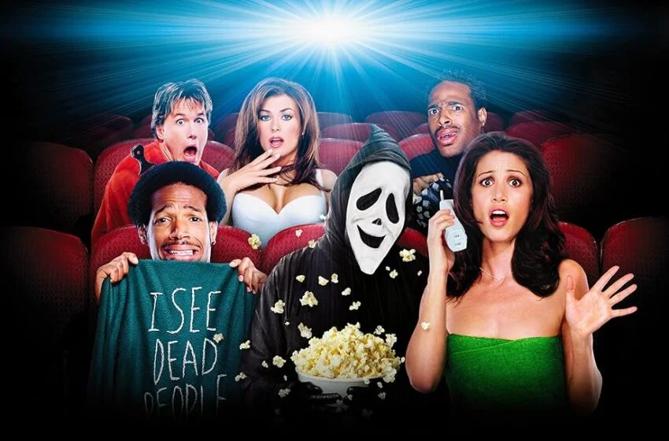

Saiba mais sobre comedia
Curso 100% gratuito
Comédia de ação é um subgénero cinematográfico que combina elementos de humor e sequências de ação intensas, como perseguições, lutas e explosões. O humor pode surgir de situações inesperadas vividas pelos personagens ou de interações entre eles, criando uma narrativa dinâmica que equilibra o suspense da ação com momentos hilariantes. Este género, popularizado nos anos 80, frequentemente aborda histórias de policiais ou de artes marciais
Saiba maisHumor negro, termo de origem francesa que remete a humor ácido e mórbido, é um gênero de comédia que lida com temas tabus e sensíveis, como morte, sofrimento ou temas considerados ilícitos, com o objetivo de chocar ou provocar reflexão, absurdo ou do sarcasmo, a algo ruimS. Por essa razão, ativistas e linguistas recomendam o uso de termos alternativos, como "humor ácido," "humor pesado" ou "humor mórbido," para evitar a conotação racista e focar na característica satírica do gênero.
Saiba mais
Paródia e sátira são gêneros artísticos que usam o humor, mas com propósitos distintos: a paródia imita o estilo de uma obra existente para criar um novo sentido cômico ou crítico, já a sátira critica um comportamento, uma instituição ou uma ideia, muitas vezes usando o humor, o exagero e a ironia para expor falhas. A paródia é uma forma de intertextualidade que se refere a um texto pré-existente, enquanto a sátira é um gênero original que visa a crítica social ou política.
Saiba mais